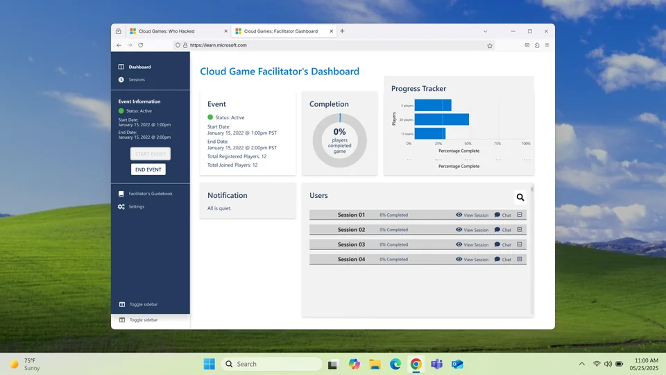

The whole game.
A clearer view.
I led product design for a workshop-level facilitator experience for Microsoft Learn Cloud Games, bringing team progress, communication, and session controls into a focused MVP delivered in four weeks.

The challenge: from one team to a whole workshop
Expanding Who Hacked? into real-time co-op play introduced a new user: the facilitator. They needed to monitor a whole session, understand each team’s progress, and help players without losing sight of the larger game.
The scope arrived while the main game was still in development. We had four weeks to define and deliver a focused MVP with a lean team.
My role: leading the dashboard design
As lead product designer, I created wireframes, interaction flows, and Figma prototypes for the facilitator and player views. I worked with a project manager, art director, and developer, documenting requirements with the PM while engineering built in parallel.
We reviewed designs directly with Microsoft stakeholders and prioritized the features needed to run a session, balancing new requests against the delivery timeline.
Giving facilitators clarity and control
The dashboard combined session-wide oversight with a closer view of individual teams. We prioritized start and stop controls, teammate chat, facilitator-to-team messages, global announcements, and a hand-raise feature for teams requesting help.
Anonymization and moderation controls supported fair interactions and gave facilitators a way to remove disruptive players. Lower-priority requests were deferred to keep the MVP focused.
Delivery and scale
We delivered the MVP in four weeks and evaluated it in an alpha session with players and facilitators.
Working with engineering, I helped scale the system architecture from a single-team view to a workshop-level proctor model capable of supporting 200+ concurrent players and moderators per session. The facilitator view brought monitoring, communication, and troubleshooting into one interface.
Explore the complete process and original artifacts in the original case study ↗.
Back to selected work ↗